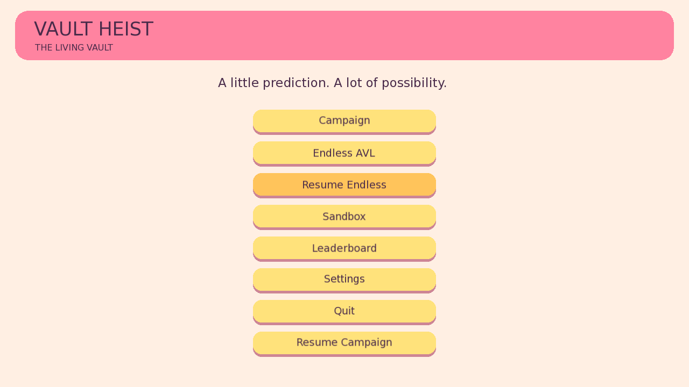
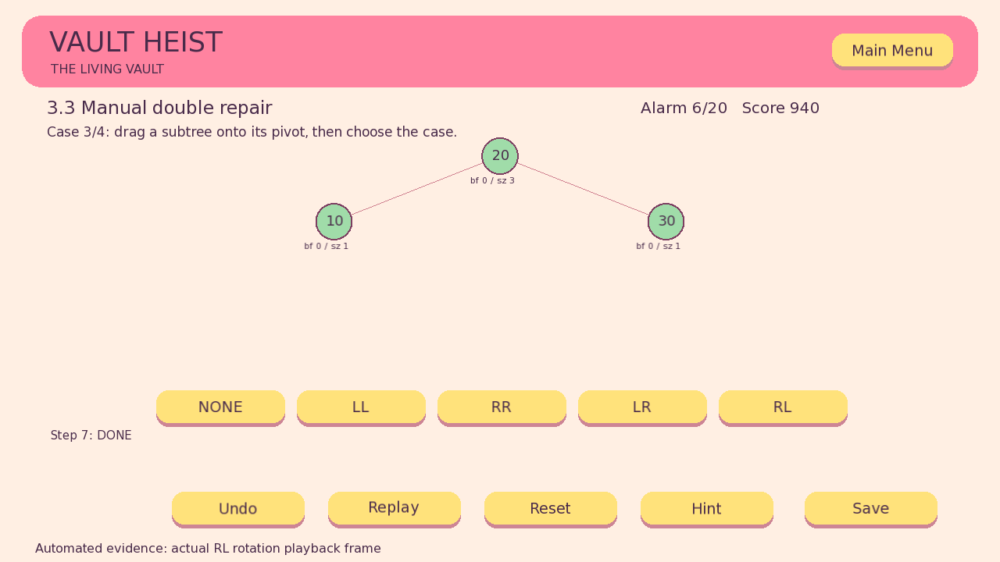
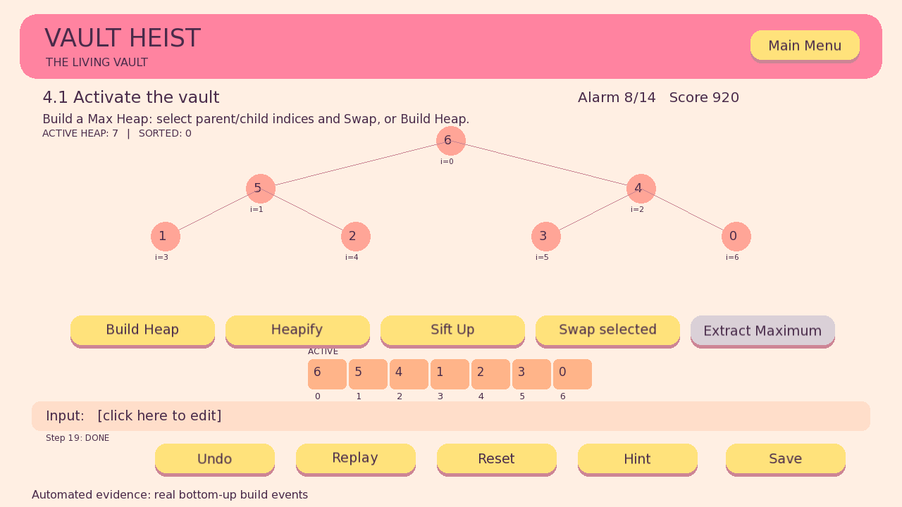
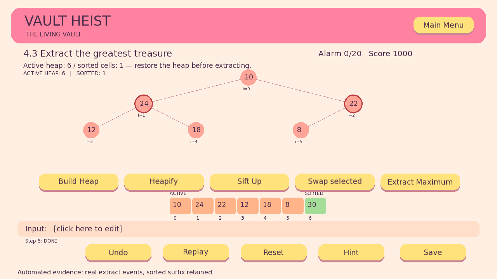
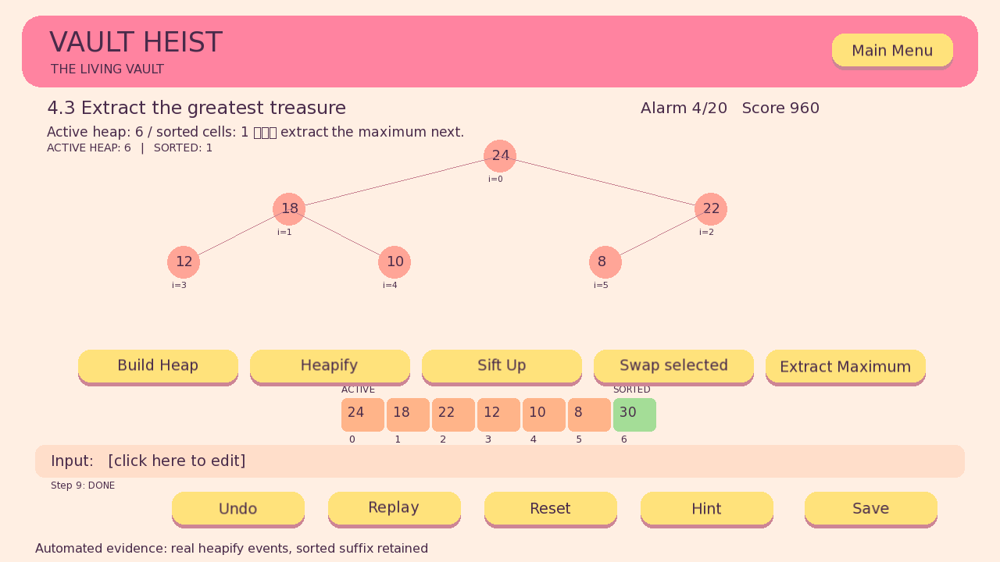
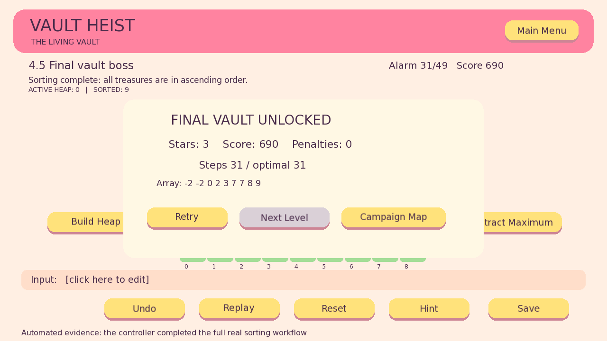
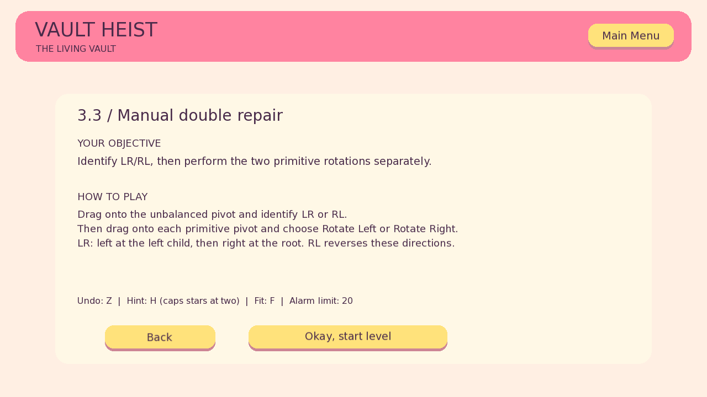

Project report · revised 22 November 2026
C++17 · SFML 2.6.1 · GCC 15.2.0 · Ubuntu WSL/WSLg
This report presents the architecture, algorithmic complexity, all seven Section 10 benchmark experiments, test evidence and screenshots from the running game. The campaign contains four acts and twenty levels, supported by Sandbox and Endless AVL modes.

Student IDs: __________________ / __________________
Section: __________________
Contributions: complete with the actual contributors before submission.
The screenshots are real automated captures of controller-driven gameplay and event playback. They are not evidence of exhaustive manual mouse testing. Benchmarks were rerun on 22 November 2026; GUI captures were recorded on 20 November 2026.
SFML UI → GameController → BackendAdapter → Backend
↓ ↓
GameSnapshot ← EventBatch
↓
AnimationController → RendererThe backend includes no SFML or middleware headers. Nodes have stable integer IDs, parent links, heights and subtree sizes. Heap cells use zero-based indices. Middleware validates allowed actions and applies alarm/scoring once. Renderers consume snapshots and never own backend nodes.
Nodes and buffers are owned explicitly. Trees, event batches, frames, snapshots, heap arrays and history have deep-copy behavior and destructors. Undo restores a coherent backend/game-state snapshot. Replay reads retained events and does not recharge alarm or re-award progress.
Events include visits, comparisons, insertion, unlink, value swaps, rotations, metadata changes and heap steps. Structural events retain their actual after-step frames. Playback uses frame delta time, one event at a time, with pause, previous/next and speed controls. The authoritative backend may be ahead of the displayed state.
Authored C++ uses manual arrays, pointers and std::string, with no STL containers/algorithms, enum declarations or global variables. Leaf height is 1; empty height is 0; diameter and path length count edges. AVL rank is inclusive, matching the handout.
| Level | Objective and validation |
|---|---|
| 1.1 | Four traversal click sequences match backend visits. |
| 1.2 | Drag tokens into slots; solve preorder/inorder and postorder/inorder. |
| 1.3 | Postorder height answers followed by edge diameter. |
| 1.4 | Select endpoints, LCA, trace path and give edge length. |
| 1.5 | Bottom-up child swaps or complete remaining swaps with Auto. |
| 2.1 | Choose BST search directions and Found. |
| 2.2 | Guide insertion to the correct empty leaf, rejecting duplicates. |
| 2.3 | Identify and perform leaf, one-child and two-child deletion. |
| 2.4 | Run pruned range query and select exactly the returned rooms. |
| 2.5 | Search a sorted-insertion chain; explain the need for balance. |
| 3.1 | Select every invalid balance-factor badge. |
| 3.2 | Four single repairs: LL and RR twice each. |
| 3.3 | Four double repairs; case choice and two separate primitives. |
| 3.4 | Predict LL/RR/LR/RL before real insertion. |
| 3.5 | Size-guided kth path, inclusive rank and size validation. |
| 4.1 | Construct a Max Heap by valid repairs or bottom-up build. |
| 4.2 | Repair a downward disturbance and an upward disturbance. |
| 4.3 | Extract maxima into suffix and restore active heap. |
| 4.4 | Multiple extraction/heapify iterations under alarm limit. |
| 4.5 | Sort a new duplicate/negative-containing array; unlock final vault. |
Campaign entry, retry and resume show an objective/control briefing before play. Success saves best stars and unlocks the next level. Hints cap stars at two. Capacity is ceil(1.5 × model-computed optimal steps) + 2; alarm-full failure waits for active playback to finish.
| Operation | Time | Additional working space |
|---|---|---|
| Tree traversals / height / diameter | O(n) | O(h) recursion/stack; level order O(n) |
| Reconstruction | O(n²) with explicit inorder scans | O(n) nodes + O(h) recursion |
| General LCA / paths / mirror | O(n) | O(h) or retained path buffers |
| BST insert / search / delete | O(h), worst O(n) | O(h) for supporting calls |
| BST kth by inorder scan | O(n) | O(h) manual stack |
| AVL insert / search / delete | O(log n) | O(log n) path/repair |
| AVL kth / rank / range count | O(log n) | O(1) iterative queries |
| Bottom-up heap build | O(n) | O(1) algorithm workspace |
| Heap insert / extract / heapify | O(log n) | O(1) iterative sift |
| Heap Sort | O(n log n) | O(1) excluding stored array |
These bounds exclude optional event recording, snapshots and debug validation. Deep event frames may copy the current structure per mutation; this deliberately favors understandable playback/undo over minimum visualization memory. Benchmarks disable events and perform validation outside timed sections.
Insertion Sort is the comparison baseline. It has O(n²) worst-case comparisons/moves and O(1) auxiliary workspace. A shift/move is reported separately from a heap swap; their counts are not treated as identical operations.
SANITIZE=1 ASAN_OPTIONS=detect_leaks=1 bash tests/run.sh bash tests/benchmark.sh bash run.sh --build-only
The test suite is assertion-based C++ with manually managed reference buffers. Assertions remain enabled. Backend tests link no SFML; controller tests exercise middleware without opening a window. Sanitizers check invalid accesses, undefined behavior and leaks.
| Suite | Coverage |
|---|---|
| BinaryTree | Empty/single/skewed trees; recursive/iterative traversal; reconstruction; height/diameter; LCA/paths; mirror/equality/symmetry; IDs, copies and events. |
| BST and AVL | Duplicate rejection; search and all deletion cases; extremes; queries; LL/RR/LR/RL; height/size/balance invariants; deterministic mutation stress and rank/kth. |
| MaxHeap | Build, sifting, insert/extract, sorting, negatives/duplicates, active prefix/sorted suffix, copies, validation and event ordering. |
| Campaign | All twenty levels: solve/fail/retry, optimal score, stars, sequential unlock, replay without extra score, checkpoints, undo and hint cap. |
| Endless/Sandbox | 400 paired deterministic rounds; five prediction outcomes; deadlines/pause/focus; leaderboard; save/resume; explicit AVL repair; undo/replay. |
| Persistence | Malformed saves; temporary validated restoration; stale campaign-progress recovery; save replacement and failed-source preservation. |
Checkpoints contain the model, accepted commands, counters, hint/selection state and unlock stars. A temporary controller replays and validates the saved state before replacing the live state. Normally a temporary file replaces the save; a verified copy fallback preserves previous bytes in a backup when replacement is denied.
Results and exact verification limits are in docs/test-results.txt. The current run log is docs/test-run-2026-11-22.txt. GUI captures demonstrate actual execution; exhaustive manual paths, native Windows packaging and large-view 60-FPS acceptance remain unverified.
All seven required experiments use n = 100, 1,000 and 10,000. The benchmark links backend sources only, compiles with GCC -O2, and disables events through the setEventRecording(false) flag on every structure. Empty event batches are asserted; independent counters remain active. No GUI, animation or snapshot recording is timed.
Inputs use deterministic unsigned LCG state initially 3017. Tree cases insert distinct keys 0..n−1, sorted or shuffled. Both structures receive identical 10,000 successful random search keys. Timings use std::clock CPU seconds: tables convert to milliseconds or microseconds. These are single local measurements; they have no confidence intervals and small values are resolution/scheduling sensitive.
| n | Insertion order | BST height | AVL height |
|---|---|---|---|
| 100 | sorted | 100 | 7 |
| 100 | random | 14 | 8 |
| 1000 | sorted | 1000 | 10 |
| 1000 | random | 22 | 12 |
| 10000 | sorted | 10000 | 14 |
| 10000 | random | 30 | 16 |
Leaf height is 1. Sorted insertion makes the BST a height-n chain, while AVL height remains logarithmic. Random insertion improves this BST sample but provides no worst-case balancing guarantee.
| n / input | BST cmp/query | AVL cmp/query | BST total ms | AVL total ms | BST µs/query | AVL µs/query |
|---|---|---|---|---|---|---|
| 100 / sorted | 50.64 | 5.81 | 4.082 | 0.712 | 0.408 | 0.071 |
| 100 / random | 7.30 | 5.90 | 0.637 | 0.756 | 0.064 | 0.076 |
| 1000 / sorted | 505.57 | 8.99 | 39.105 | 0.749 | 3.911 | 0.075 |
| 1000 / random | 12.64 | 9.16 | 1.826 | 0.941 | 0.183 | 0.094 |
| 10000 / sorted | 4986.43 | 12.36 | 351.083 | 1.236 | 35.108 | 0.124 |
| 10000 / random | 16.50 | 12.57 | 2.035 | 1.939 | 0.204 | 0.194 |
Comparison averages equal counter/10,000; average times equal total/10,000. Searches are successful in-range queries, not a mix of misses and hits. Counts expose the chain cost more reliably than tiny timing differences.
Each case inserts n keys and then deletes all n keys in the same sorted/shuffled order. Counts are primitive rotations: LR/RL each count as two. Averages divide totals by n; maximum/delete counts every primitive repair caused by one deletion.
| n / input | Insert total | Avg/insert | Delete total | Avg/delete | Max/delete |
|---|---|---|---|---|---|
| 100 / sorted | 93 | 0.9300 | 44 | 0.4400 | 1 |
| 100 / random | 47 | 0.4700 | 36 | 0.3600 | 3 |
| 1000 / sorted | 990 | 0.9900 | 491 | 0.4910 | 1 |
| 1000 / random | 659 | 0.6590 | 383 | 0.3830 | 4 |
| 10000 / sorted | 9986 | 0.9986 | 4988 | 0.4988 | 1 |
| 10000 / random | 6757 | 0.6757 | 4031 | 0.4031 | 6 |
Insertion needs at most two primitive rotations after an update. Deletion may rebalance several ancestors, so one deletion can use more rotations. Results depend on the deterministic operation order and do not establish an average-case theorem.
The same 1,000 positions are queried on both trees. BST walks inorder with a manual stack; AVL uses maintained subtree sizes. The result checksum is compared before results are accepted.
| n / input | BST total ms | AVL total ms | Matching checksum |
|---|---|---|---|
| 100 / sorted | 0.154 | 0.038 | 50048 |
| 100 / random | 0.132 | 0.048 | 49976 |
| 1000 / sorted | 1.658 | 0.064 | 496788 |
| 1000 / random | 0.737 | 0.065 | 486100 |
| 10000 / sorted | 16.517 | 0.133 | 4955748 |
| 10000 / random | 22.691 | 0.178 | 4894476 |
BST scanning is O(n) worst case per query; the size-augmented AVL query follows one O(log n) path. The measurement includes no event or GUI work. Raw totals, averages and times for experiments 1–4 are retained in docs/benchmarks/trees.csv.
Build Max Heap receives a fresh raw array. Random values span negative and positive keys; ordered inputs are ascending and descending; duplicate-heavy values lie in 0..7. Copy/allocation performed by buildMaxHeap is included in build time. Validation runs after timing.
| n | Input | Build ms | Comparisons | Swaps | Comparisons/n |
|---|---|---|---|---|---|
| 100 | random | 0.028 | 175 | 68 | 1.750 |
| 100 | sorted | 0.002 | 190 | 96 | 1.900 |
| 100 | reverse | 0.001 | 99 | 0 | 0.990 |
| 100 | duplicates | 0.002 | 170 | 60 | 1.700 |
| 1000 | random | 0.022 | 1849 | 732 | 1.849 |
| 1000 | sorted | 0.018 | 1982 | 992 | 1.982 |
| 1000 | reverse | 0.008 | 999 | 0 | 0.999 |
| 1000 | duplicates | 0.016 | 1827 | 711 | 1.827 |
| 10000 | random | 0.319 | 18771 | 7426 | 1.877 |
| 10000 | sorted | 0.171 | 19982 | 9992 | 1.998 |
| 10000 | reverse | 0.153 | 9999 | 0 | 1.000 |
| 10000 | duplicates | 0.244 | 18430 | 7178 | 1.843 |
Starting at the last internal node, sift down each parent. About n/2 nodes have height 0, n/4 have height 1, n/8 have height 2, and so on. Total sift work is bounded by n × Σ(h / 2h+1) = O(n). The comparisons/n column stays bounded in these cases, supporting that analysis; timings alone are not a proof.
The heap stores O(n) values. Iterative sifting uses O(1) auxiliary workspace beyond that owned storage. Random and both ordered cases satisfy the required comparison; duplicate-heavy cases are included for consistency with sorting.
Raw times, comparisons and swaps are in docs/benchmarks/heaps.csv. A displayed 0.000 ms means rounding below the displayed precision, not zero operations.
Each Heap Sort run starts with an unsorted copy and includes bottom-up construction plus all extractions. Heap comparisons and swaps are counted with events disabled. Every sorted output is checked element-by-element against an independent manual Insertion Sort.
| n / input | Heap ms | Heap cmp | Heap swaps | Insert ms | Insert cmp | Insert shifts |
|---|---|---|---|---|---|---|
| 100 / random | 0.014 | 1012 | 568 | 0.003 | 2658 | 2563 |
| 100 / sorted | 0.012 | 1081 | 641 | 0.000 | 99 | 0 |
| 100 / reverse | 0.011 | 944 | 517 | 0.003 | 4950 | 4950 |
| 100 / duplicates | 0.013 | 981 | 526 | 0.003 | 2308 | 2212 |
| 1000 / random | 0.228 | 16792 | 9037 | 0.116 | 248038 | 247046 |
| 1000 / sorted | 0.161 | 17583 | 9709 | 0.001 | 999 | 0 |
| 1000 / reverse | 0.148 | 15965 | 8317 | 0.224 | 499500 | 499500 |
| 1000 / duplicates | 0.147 | 15502 | 8094 | 0.120 | 219998 | 219000 |
| 10000 / random | 2.696 | 235465 | 124260 | 14.196 | 25093792 | 25083799 |
| 10000 / sorted | 2.598 | 244460 | 131957 | 0.021 | 9999 | 0 |
| 10000 / reverse | 2.267 | 226682 | 116697 | 27.794 | 49995000 | 49995000 |
| 10000 / duplicates | 2.833 | 212835 | 109929 | 10.928 | 21887498 | 21877500 |
Both algorithms receive identical original values. Insertion Sort is the course-style comparison baseline: its counter records key comparisons and rightward shifts, not heap-style swaps. A heap swap exchanges two cells; an insertion shift copies one cell. Counts are labelled separately rather than treated as equivalent operations.
| Algorithm | Time | Auxiliary space | Stability |
|---|---|---|---|
| Heap Sort | O(n log n) worst case | O(1), beyond existing heap array | Not stable |
| Insertion Sort | O(n) best; O(n²) worst | O(1), beyond reference array | Stable for equal values |
Heap Sort performs O(n) construction followed by n logarithmic sifts. Insertion Sort benefits from already sorted input but needs quadratic shifts on reverse input. Sorting auxiliary space excludes the O(n) test copies and post-timing verification snapshot; it is an algorithmic bound, not measured process memory. Tiny single-run timings should not be interpreted as a precise ranking.
These are actual paused event-playback captures from the running application, produced by controller-driven diagnostic automation. The notices identify the captured event case. No diagram has been substituted for a backend result.

Node IDs stay attached to the original nodes. Heights and sizes are updated by the real rotations, and full balance validation is required at the completed repair boundary. The intermediate first primitive of a double rotation may intentionally remain unbalanced.




Captures are automated runs of the actual game controller. HEAP_SWAP drives matching value motion in both views. Active/sorted labels and indices supplement color. The final completion event is tested to occur exactly once.
cd Vault-Heist bash run.sh --build-only bash run.sh bash tests/benchmark.sh
Use Ubuntu WSL/WSLg and the installed SFML 2.6.1 under /usr/local. Include all src/**/*.cpp and include/**/*.h, plus tests, run/build scripts, assets, external JSON levels, documentation and benchmark CSVs. The executable is Linux/WSL, not a native Windows .exe. Do not submit .git history or personal player saves.
Unit test suite and test report: executable automated checks of algorithms and edge cases, plus commands, actual results and limitations. This repository supplies tests/backend, tests/middleware, tests/run.sh and docs/test-results.txt. Benchmarks measure performance and do not replace correctness tests.
Level files and authoring guide: external data defining puzzle scenarios, with instructions for editing/loading/validating them. The twenty JSON files are under data/levels; docs/level-authoring.txt explains fields, examples and supported objective types.

Fill in real IDs, section and contribution details; rename the archive to the course pattern. Review manual GUI paths on the demonstration machine. Some nonmutating Sandbox queries lack full per-node playback. Large-view 60-FPS acceptance, optional sound assets and native Windows deployment are unverified.
Level fixtures are reproducible explicit arrays; seed metadata does not randomize them. JSON editing can replace a supported scenario within the twenty slots without recompilation. Adding extra slots or a new objective handler currently requires code changes; the general no-code expansion requirement is therefore only partially met.
Source requirements: supplied 12-page Project Deliverable 1 (1).pdf, its Section 10 benchmark table, repository specifications and owner-approved Endless rules. No test result, screenshot, benchmark measurement or authorship is fabricated.